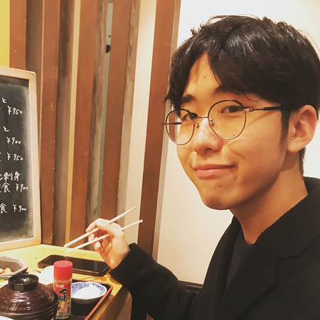
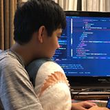

こんにちは。
大学生をやりながらフリーランスで働くクリエイターの吉開拓人です。今回は僕の開発者仲間の納本くんと一緒にキーボードについて語っていきます。


こんにちは。プログラミングが好きな高校生の納本穂高です。よろしくおねがいします。
僕らは結構キーボードにはこだわっているんだよね。自作キーボードにも挑戦したし。穂高くんはどんなキーボード使ってたっけ？
メインPC用にTopreのREALFORCE 108UBK
ブラック
JIS配列
Linux PC用にHHKB Professional2
ブラック
US配列
キーボードは僕たちプログラマにとって最重要と言ってもいいほど、大切なものですからね。
そうだね。何ならPCより大事なまである。HHKBのPVでも、「PCは消耗品だが、キーボードは生涯使える大切なインターフェースである」って言ってたからね。
本当にそのとおりですよね。ちなみに吉開さんはどんなキーボードを使っていらっしゃるのですか
メインで自作キーボードの
Lily58 Pro
スイッチ: Zilent AQUA
キーキャップ: 黒 無刻印
Lily58と一緒に使う、テンキーの自作キーボードShiro
もう一つメインで
HHKB Professional HYBRID Type-S
US配列
無刻印
あとたまにMacを使うからその時はMagic Keyboard2
JIS配列
おお！本当に似ていますね。Lily58はいつ頃から使ってるんですか？
1年半ぐらい前かな。友達が設計したモデルなんだけど、どんなものなのか気になって買ってみたんだ。その時は全部込みで2万5千円ぐらいして、初めての時はすごく高く感じたな。
僕もまだLily58しか作ったことはありませんが、いつか棚を自作キーボードで飾りたいと思っています。沼ですね（笑）
納本くんはなんでキーボードを自作しようと思ったの？
まず、僕は自作キーボードについてYoutubeに投稿されていた、いわゆる「紹介動画」で知りました。自分に合った形で、打ちやすいキースイッチ、かっこいいキーキャップ、つまり「僕の考えた最強のキーボード」が作れるわけです。
もともと僕は何かを組合わあせて作品を作るのが好きだったので、自作キーボードというものは僕にとってものすごく魅力的なものでした。そしてつい去年、自作キーボードを作れるお金が溜まったので「Lily58 Pro」という自作キーボードのキットを買い、初めての自作キーボードを作りました。
本当にそのとおりだね。自分にとっての最強のキーボードが、今持っているキーボードではないと気づいてしまうと、自作するしかないよね。製品だと量産の都合で作りにくい形のキーボードとかあるから、そういうのも自作キーボードで作れるのは魅力。
Lily58はとてもキーが打ちやすく、長時間の作業でも疲れないため、すごく良いキーボードにだと思います。また左右分割型なので、自分の好きな体勢で作業が出来るという点も非常に魅力的です。
それは同感、やっぱ肩を開いてキーが打てるのは疲れにくいよね。その点はHHKBよりはるかに勝っている所だと思う。納本くんのLily58は茶軸だよね？使いやすい？
「メカニカルなら茶軸が最強」だと思っています。キーを押すと「ストンッ」と気持ちよくレスポンスが帰ってくるのがすごく気持ち良いです。
いいねえ。茶軸スイッチはまだ試したことないけど、結構良いって聞くよね
Tai-Hao の黒と水色ベースのものを選びました。これも個人的に「黒 + 水色 = かっこいい！」みたいなイメージがあって、それにピッタリのキーキャップを見つけました。
スイッチとキー配置、キーキャップも含めてLily58は納本くんにとっての最強のキーボードになれたってことなのかな？
かなり理想のキーボードができた！とも思ってますが、僕の中でまだREALFORCEの方が勝ってしまいます。どうしても打ち心地で差が出てしまいます。カスタマイズ性の高さはLily58が勝っていますが。
わかる、、やっぱうち心地は高級キーボード、静電容量に勝つのは難しいよね。だから僕は両方同じぐらい使ってる。ゆったりやりたい時と、本気を出したい時で使い分けるみたいに。
そうなんですよね...まだ技術的な問題とかがありそうですが、静電容量のキーボードいつか作ってみたいです。
そうだね、技術の進歩が待ち遠しいね！ちなみに、納本くんはUS配列派？JIS配列派？
どっちかというとJIS配列の方が使いやすいですね。やっぱりUS配列より数倍使っている配列なので、頭がその配列に慣れてしまっているのはあります。
なるほど、やっぱ慣れには逆らえないよね。僕は自作キーボードを始める段階でUSに切り替えたんだけど、今度はUSに慣れてしまって、持ってるJISのキーボードが使えなくなってきたんだ
そうなんですよね...結局、キー配列は練習して頭と指を慣らさないといけませんからね...最近はUS配列やJIS配列以外にもEucalyn配列やColemak配列などがありますからね。自作キーボードはこういう配列を自分でプログラミングして使えるので、「配列」という点でも自由に設定できるのも自作キーボードの良さですよね。
確かに。そういう時に大事になってくるのが、無刻印という選択肢だよね。僕のメインのLily58とHHKBは無刻印にしてるんだけど、いざ配列を変えようと思ったらキーキャップ変える必要がないのが良い。
無刻印かっこいいですよね。僕が自作キーボード作ったときは「無刻印」の存在を忘れて、色合いで判断していたんですよね。次作る自作キーボードは無刻印にする予定です！
おお、良いね。無刻印だとたまに友達から驚かれたりして気持ちいいよ笑
お！なるほど。リアクションが楽しめるわけですね（笑）
では最後に、お互いのキーボードの「ここだけは譲れないこだわり」を話します
僕の譲れないポイントは、集中力を阻害せず、楽しくプログラミングできるキーボードであることかな。集中を妨げないように静音であることは必須だし、自分に100%フィットしているという確信があるキーボードでコードを書くのはとても楽しい。
あと、クリエイターとして、自分の実力に見合うキーボードを使いたいとも思ってる
僕はまだ自作キーボード歴が少ないのであまり大きいことが言えませんが、自作キーボードを使って楽しく、気持ちよく作業出来ることもそうですが、やはり「自作キーボードを作る」ということを楽しむということが一番だと思っています。
自分で形や色、キースイッチの種類やキー配列を選んだり、キーボードの基盤に電子部品をはんだ付けしたり、その作業だけでも「自作キーボード」の楽しさというものがぎっしり詰め込まれています。これからも自分にピッタリくるキーボードを自作していきたいです。
確かに自作キーボードを作るのすごく楽しいからどんどん作りたくなるし、友達に布教したくなるよね。これからお互い最高のキーボードに出会えるといいね。
それでは納本くん、今回はありがとうございました！